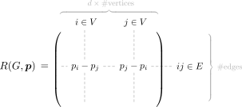
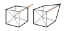

In my lecture today I proved that moving vertices radially in a coned framework preserves first-order rigidity. This is a precursor to a number of important results, such as projective invariance of first-order rigidity, or the equivalence of generic rigidity on the sphere and Euclidean space. The most direct way to the result leads through a lengthy calculation where a lot of things can go wrong (and went wrong during the lecture). Here I redo the computation – carefully and in detail.
First-order rigidity crash course
Since this is my first post on framework rigidity, I will briefly introduce the relevant ideas of the first-order theory of rigidity. The informed reader may skip this section.
A first-order motion (also infinitesimal motion) is a map \(\dot{\boldsymbol p}:V\to\Bbb R^d\) that satisfies
\[(*)\quad \langle p_j-p_i, \dot p_j-\dot p_i\rangle = 0, \quad\text{for all $ij\in E$}.\]
The intuition is that moving vertices in the directions of a first-order motion does not violate any edge length constraint in the first order. Each (differentiable) motion of a framework gives rise to a first-order motion by differtiating at time \(t=0\); but not all first-order motions need to correspond to “actual” motions in this way (and this is precisely what makes rigidity different from first-order rigidity). Some first-order motions are called trivial because they exist irrespective of the details of the framework: infinitesimal translations and rotations. They can be written in the form \(\dot {\boldsymbol p} = S\boldsymbol p + v\) where \(S\in\Bbb R^{d\times d}\) is skew-symmetric and \(v\in\Bbb R^d\). A first-order motion that is not trivial is called a first-order flex. A framework that has a first-order flex is said to be first-order flexible. It is called first-order rigid if it has none. First-order rigidity implies actual rigidity, whereas first-order flexibility does not always imply actual flexibility.
For the linear system \((*)\) we can write down a matrix \(R(G,\boldsymbol p)\in\Bbb R^{E\times dV}\) whose rows correspond to the individual equations. Then \(\dot{\boldsymbol p}\) is a first-order motion if and only if \(R(G,\boldsymbol p)\dot{\boldsymbol p}=0\), or equivalenty, if \(\dot{\boldsymbol p}\in\ker R(G,\boldsymbol p)\). This matrix is called the rigidity matrix of the framework. It has the following structure:

The rigidity matrix is a useful way of packaging the linear details of a framework. Essentially all of first-order theory can be expressed rather elegantly using it. For example, a framework (with \(V\ge d+1\) vertices) is first-order rigid if and only if \(\operatorname{corank}R(G,\boldsymbol p)={d+1\choose 2}\). Moreover, the rank of the rigidity matrix can be seen as a more fine-grained measure of rigidity, or of “how far away from rigid” a framework is (in the first-order sense).
The other first-order notion that is often useful is a stress, which is a map \(\boldsymbol\omega:E\to\Bbb R\). An equilibrium stress is a stress that satisfies
\[(**)\quad \sum_{\mathclap{j:ij\in E}}\omega_{ij}(p_j-p_i)=0,\quad\text{for all $i\in V$}.\]
The physical interpretation of stress is as an internal force in an edge that tries to expand or contract the edge by pushing and pulling on its end vertices along the edge direction. An equilibrium stress is then a stress where at each vertex these forces cancel out. It turns out that \(\boldsymbol\omega\) is an equilibrium stress if and only if \(R^\top\!(G,\boldsymbol p)\boldsymbol\omega=0\), or equivalently, if \(\boldsymbol\omega\in\ker R^\top\!(G,\boldsymbol p)=\mathop{\mathrm{coker}}R(G,\boldsymbol p)\).
Since first-order motions and stresses appear as the kernel and cokernel of the rigidity matrix respectively, one can use either to study its rank, and hence, the first-order rigidity of \((G,\boldsymbol p)\). In fact, even though one usually aims to make a statement about first-order flexes, it often turns out more convenient to argue about stresses. One reason is that stresses have no equivalent of “trivial motions” one needs to account for. We will see an example of this when we consider coned frameworks.
Coned frameworks and radial moves
A framework \((G,\boldsymbol p)\) is coned if the graph \(G\) has a dominating vertex, that is, a vertex that is adjacent to all other vertices. We shall denote this cone vertex by \(*\in V\).
A radial move in a coned framework slides vertices (other than the cone vertex) along the rays that connect them to the cone vertex. If we assume for simplicity that \(p_*=0\), then a radial move is given by \(p_i\mapsto r_i p_i\) for \(r_i\not=0\).

Theorem
Radial moves preserve first-order rigidity and flexibility. More strongly, radial moves preserve the rank of the rigidity matrix.
Proof.
Let \((G,\boldsymbol p)\) be a coned framework, and \((G,\hat{\boldsymbol p})\) obtained from it by radial moves. As before, we assum \(p_*=0\) and \(\hat p_i=r_i p_i\) for \(r_i\not=0\).
With the primary goal to show that radial moves preserve first-order rigidity, which is defined in terms of first-order flexes, ones first attempt is perhaps to construct an explicit one-to-one correspondence between first-order flexes of \((G,\boldsymbol p)\) and \((G,\hat{\boldsymbol p})\). This turns out quite tedious. Instead, following a previous comment, the trick is to construct a one-to-one correspondence between equilibrium stresses. Since
\[\operatorname{rank}R(G,\boldsymbol p)=\operatorname{rank}R(G,\boldsymbol p)^\top=E-\!\overbrace{\,\ker R(G,\boldsymbol p)^\top\,}^{\mathclap{\text{space of equilibrium stresses}}}\!,\]
this also shows that the rank of the rigidity matrix is preserved.
Suppose then that we are given an (equilibrium) stress \(\boldsymbol\omega:E\to\Bbb R\) of \((G,\boldsymbol p)\), and let us try to construct an equilibrium stress \(\hat{\boldsymbol\omega}:E\to\Bbb R\) for the radially rescaled framework \((G,\hat{\boldsymbol p})\), so as to obtain a one-to-one map between the stress spaces. We shall adopt the convention that \(\omega_{ij}=0\) whenever \(ij\not\in E\) or \(i=j\), which makes many expressions less cluttered.
We make the natural guess \(\hat\omega_{ij}:=\omega_{ij}/r_ir_j\) for the non-cone edges \(ij\in E\). The corresponding natural guess \(\hat\omega_{i*}:=\omega_{i*}/r_i^2\) for cone edges does actually not work, and the correct choice is hardly guessable. Instead we derive it by enforcing the equilibrium condition \((**)\) at vertex \(i\not=*\):
\[\begin{align} 0\; &\overset!= \sum_{j} \hat\omega_{ij} (\hat p_j-\hat p_i) \\&= \sum_{\mathclap{j\not=*}} \hat\omega_{ij} (\hat p_j-\hat p_i) + \smash{\overbrace{\hat\omega_{i*} (\hat p_*-\hat p_i)}^{-\hat\omega_{i*}\hat p_i\mathrlap{\text{\color{lightgray}$\;\;\leftarrow$ we used $p_*=0$}}}} \\&= \sum_{\mathclap{j\not=*}} \frac{\omega_{ij}}{r_i r_j} (r_jp_j- r_ip_i) -\hat\omega_{i*}r_ip_i \\&= \tfrac1{r_i} \sum_{\mathclap{j\not=*}} \omega_{ij} p_j + \Big(\sum_{\mathclap{j\not=*}} \omega_{ij} \tfrac1{r_j} \Big)p_i -\hat\omega_{i*}r_ip_i \\&= \tfrac1{r_i} \underbrace{\sum_{\mathclap{j\not=*}} \omega_{ij} (p_j - p_i)}_{-\omega_{i*}(p_*-p_i)\,=\, \omega_{i*}p_i \mathrlap{\text{\color{lightgray}$\;\;\leftarrow$ we used $(**)$ for $\boldsymbol\omega$ at vertex $i$}}} + \Bigg(\sum_{\mathclap{j\not=*}} \omega_{ij} \Big(\tfrac1{r_j}-\tfrac1{r_i}\Big) - \hat\omega_{i*}r_i \Bigg)p_i \\&= \Bigg(\tfrac1{r_i}\omega_{i*} + \sum_{\mathclap{j\not=*}} \omega_{ij} \Big(\tfrac1{r_j}-\tfrac1{r_i}\Big) - \hat\omega_{i*}r_i\Bigg)p_i \end{align}\]
Thus, if \(p_i\not= 0\), we necessarily have to set
\[ \hat\omega_{i*}:= \frac{\omega_{i*}}{r_i^2} + \frac{1}{r_i}\sum_{j\not=*} \omega_{ij} \Big(\tfrac1{r_i}-\tfrac1{r_j}\Big). \]
(and if \(p_i=0\), then the we can set \(\hat\omega_{i*}\) arbitrarily). This is not far from our ansatz: it is the natural guess \(\omega_{i*}/r_i^2\) plus some reasonably nice correction term.
It remains to check that \(\hat{\boldsymbol\omega}\) satisfies the equilibrium condition \((**)\) also at the cone vertex. But this can be inferred without much computation. For the students in my course I argue using some terminology (for everyone else, see the self-contained argument below): the stress \(\hat{\boldsymbol\omega}\) gives rise to a resolvable load \(f_i:=-\sum_j \hat\omega_{ij}(\hat p_j-\hat p_i)\). As shown above, \(f_i=0\) for all \(i\not=*\). But resolvable loads are equilibrium loads, in particular, \(\sum f_i=0\). Thus, \(f_*=0\) follows as well.
This can be argued without the slang: if a stress \(\hat{\boldsymbol\omega}\) satisfies the equilibrium condition \((**)\) at all vertices \(i\not=*\), then it can be inferred to hold at \(i=*\) as well:
\[\begin{align} \sum_i \hat\omega_{i*} (\hat p_*-\hat p_i) &= \sum_{i,j} \hat \omega_{ij} (\hat p_j - \hat p_i) - \sum_{j\not=*}\overbrace{\sum_{i} \hat \omega_{ij} (\hat p_j - \hat p_i)}^{=0} \\&= \sum_{i<j} \hat \omega_{ij} (\hat p_j-\hat p_i) + \sum_{i>j}\hat \omega_{ij}(\hat p_j-\hat p_i) \\&= \sum_{i<j} \hat \omega_{ij} (\hat p_j-\hat p_i) + \sum_{j>i}\hat \omega_{ji}\smash{\overset{\mathrlap{\;\text{\color{lightgray}(we renamed $i$ and $j$)}}}(}\hat p_i-\hat p_j) \\&= \sum_{i<j} \hat \omega_{ij} (\hat p_j-\hat p_i) - \sum_{i < j}\hat \omega_{ij}(\hat p_j-\hat p_i) =0 \end{align}\]
We have conclusively shown that \(\hat{\boldsymbol\omega}\) is an equilibrium stress for \((G,\hat{\boldsymbol p})\). Also, \(\hat{\boldsymbol\omega}\) is a linear expression in terms of \(\boldsymbol\omega\), and clearly an invertible one (use \(1/r_i\) instead of \(r_i\) for the inverse). Hence we described a linear isomorphism between the equilibrium stress spaces of \((G,\boldsymbol p)\) and \((G,\hat{\boldsymbol p})\). This concludes the proof.
\(\square\)